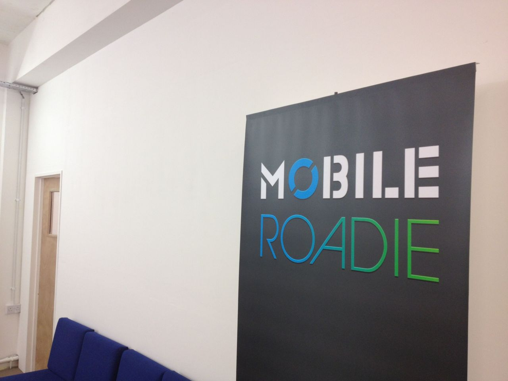

Last day at Mobile Roadie
Today is my last day at Mobile Roadie.
My time with Mobile Roadie has been amazing, we’ve won awards, we’ve been to Downing Street, and we’ve built up the UK office into a really cool place to work.
But it’s time for me to move on. I’m leaving the warm comfy embrace of permanent employment and into the harsh cold reality of freelance work. I’ve got a initial contract to get me going, which is very exciting, and I’ll post more about it when I’m up and running.
Thank you to everyone at Mobile Roadie for teaching me so much over the past year, and allowing me to be part of an amazing team. Special thanks to Stephen O'Reilly and Ash Lim for making Mobile Roadie UK as awesome, fun and friendly as it is, and to Steve Schroeder for being one of the smartest guys I know and teaching me so much.